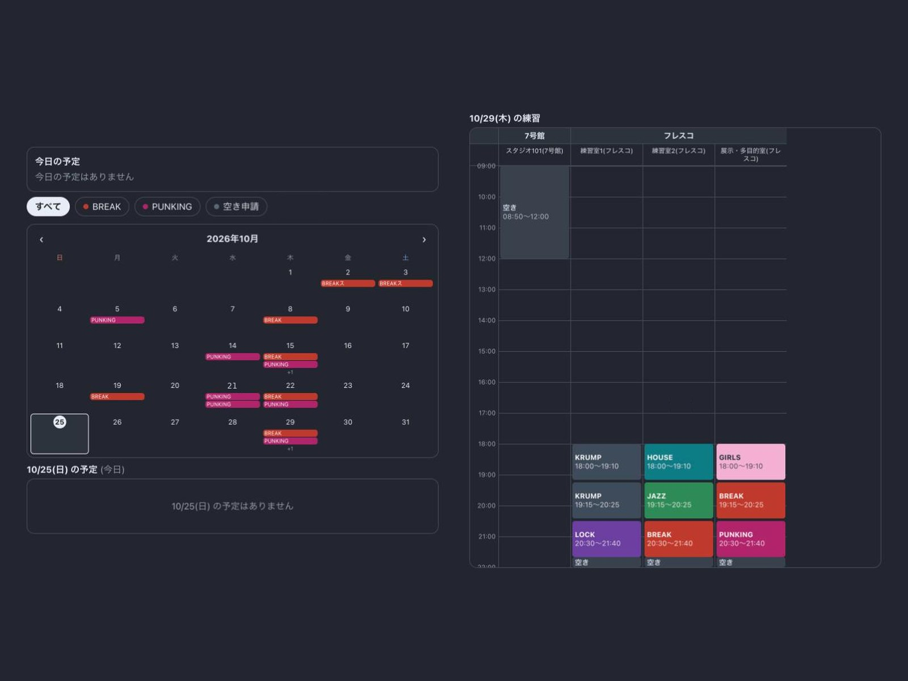

サークル練習管理アプリ
約150名・9ジャンルのダンスサークルで使う、練習日程・空き部屋の申請・出欠・鍵の受け渡しをまとめたWebアプリ。
- 課題練習室の時間割はExcelを画像にしてLINEで共有。出欠は個別確認、空き部屋はLINEのコメントで宣言しており、見落としが起きていた。
- 工夫空き部屋は10分単位で申請でき、重複はデータベース側でも防止。GoogleやAppleのカレンダーに自動反映。役職ごとの権限を設定。
- 結果運用開始から約2か月で、メンバーのほぼ全員が週3〜4日使う状態に。出欠確認の手間はほぼなくなった。
AIエージェント（Claude Code）を使って開発。私は仕様書の作成（v1.29まで改訂）、設計の判断、動作確認、メンバーの声を受けた改善を担当。